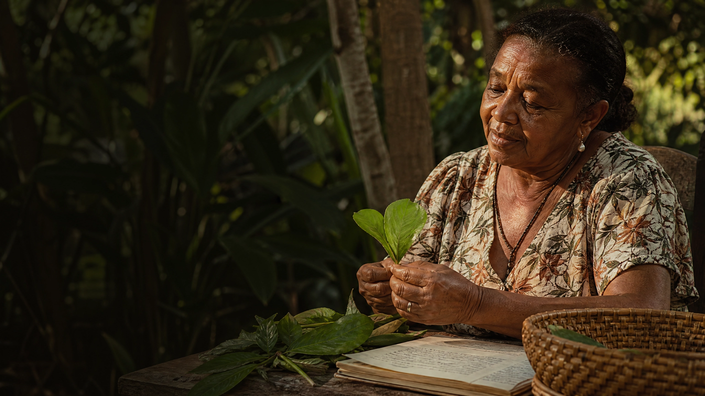

Mulheres quilombolas
Memória, território e cuidado transmitidos entre gerações.
O perfil receberá: nome, trajetória, território, plantas e memórias relacionadas.● Perfil em preparaçãoQuem mantém a memória
Conhecer as guardiãs é entender que uma planta nunca chega sozinha. Ela vem acompanhada de uma lembrança, um cuidado, um quintal e uma mulher que decidiu compartilhar parte de sua história.
Conhecer as plantas ↗
Uma apresentação coletiva
Este espaço apresenta os grupos de mulheres que inspiram o projeto. Os perfis abaixo já estão estruturados para receber nomes, imagens, áudios e histórias quando as entrevistas forem realizadas e autorizadas.
Por enquanto, são páginas de preparação: uma forma de organizar o arquivo sem falar por ninguém.
As vozes do território
Cada cartão apresenta o que será reunido no perfil real. Os campos permanecem abertos para que cada participante decida o que deseja compartilhar.
Memória, território e cuidado transmitidos entre gerações.
O perfil receberá: nome, trajetória, território, plantas e memórias relacionadas.● Perfil em preparaçãoPalavra, gesto e presença como formas de acolhimento.
O perfil receberá: nome, práticas de cuidado, relato oral e transcrição.● Perfil em preparaçãoGuardiãs do conhecimento do tempo, dos frutos e dos caminhos da mata, carregam em si a sabedoria ancestral que orienta a vida e fortalece a relação com a natureza.
O perfil receberá: nome, saberes da mata, foto, áudio e autorização.● Perfil em preparaçãoComo uma voz entra no arquivo
A equipe realiza a entrevista, organiza o material, confere a identificação das plantas e devolve o texto e o áudio para a guardiã revisar. Só depois desse retorno o conteúdo pode seguir para o catálogo público.
Estrutura de perfil
Os três perfis abaixo são modelos ilustrativos: nomes, histórias e imagens são fictícios e servem apenas para mostrar a estrutura completa. Quando as entrevistas acontecerem, basta substituir os dados pelas informações autorizadas de cada guardiã.
▣ Aviso Importante "Informamos que todo o conteúdo disponibilizado neste site foi publicado mediante autorização expressa dos responsáveis. Nenhum material aqui presente foi inserido sem consentimento prévio, garantindo transparência e respeito aos direitos de uso."Uma biblioteca viva
Explore as fichas botânicas e veja como cada entrada poderá se conectar a uma pessoa, um lugar e uma memória.